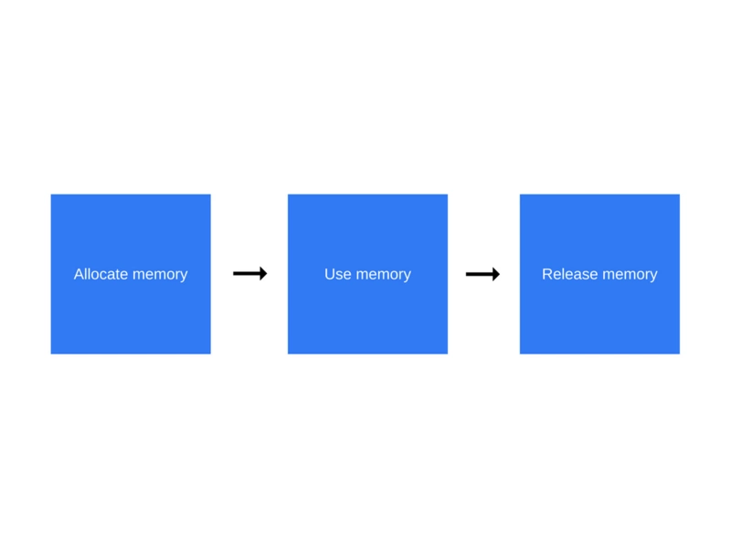

内存(Memory)也被称为内存储器和主存储器，其作用是用于暂时存放CPU中的运算数据，以及与硬盘等外部存储器交换的数据。计算机中所有程序的运行都是在内存中进行的，因此内存的性能对计算机的影响非常大。
无论什么语言，内存周期基本是一致的：

值的初始化
var n = 123; // 给数值变量分配内存
var s = "azerty"; // 给字符串分配内存
var o = {
a: 1,
b: null
}; // 给对象及其包含的值分配内存
// 给数组及其包含的值分配内存（就像对象一样）
var a = [1, null, "abra"];
function f(a){
return a + 2;
} // 给函数（可调用的对象）分配内存
// 函数表达式也能分配一个对象
someElement.addEventListener('click', function(){
someElement.style.backgroundColor = 'blue';
}, false);
通过函数调用分配内存
var d = new Date(); // 分配一个 Date 对象
var e = document.createElement('div'); // 分配一个 DOM 元素使用值的过程实际上是对分配内存进行读取与写入的操作。读取与写入可能是写入一个变量或者一个对象的属性值，甚至传递函数的参数。
大多数内存管理的问题都在这个阶段。在这里最艰难的任务是找到“所分配的内存确实已经不再需要了”。它往往要求开发人员来确定在程序中哪一块内存不再需要并且释放它。
这是最简单的垃圾收集器算法。如果没有引用指向这个对象的时候，这个对象就被认为是“可以作为垃圾收集”。
var o = {
a: {
b:2
}
};
// 两个对象被创建，一个作为另一个的属性被引用，另一个被分配给变量o
// 很显然，没有一个可以被垃圾收集
var o2 = o; // o2变量是第二个对“这个对象”的引用
o = 1; // 现在，“这个对象”的原始引用o被o2替换了
var oa = o2.a; // 引用“这个对象”的a属性
// 现在，“这个对象”有两个引用了，一个是o2，一个是oa
o2 = "yo"; // 最初的对象现在已经是零引用了
// 他可以被垃圾回收了
// 然而它的属性a的对象还在被oa引用，所以还不能回收
oa = null; // a属性的那个对象现在也是零引用了
// 它可以被垃圾回收了
循环引用的问题
当遇到循环的时候就会有一个限制。在下面的实例之中，创建两个对象，并且互相引用，因此就会产生一个循环。当函数调用结束之后它们会走出作用域之外，因此它们就没什么用并且可以被释放。但是，基于引用计数的算法认为这两个对象都会被至少引用一次，所以它俩都不会被垃圾收集器收集。
function f(){
var o = {};
var o2 = {};
o.a = o2; // o 引用 o2
o2.a = o; // o2 引用 o
return "azerty";
}
f();
JavaScript 中最常用的垃圾收集方式是标记清除（mark-and-sweep）。当变量进入环境（例如，在函数中声明一个变量）时，就将这个变量标记为“进入环境”。从逻辑上讲，永远不能释放进入环境的变量所占用的内存，因为只要执行流进入相应的环境，就可能会用到它们。而当变量离开环境时，则将其标记为“离开环境”。这个算法由以下步骤组成：
内存泄漏可以被定义为应用程序不再需要的内存，但是由于某些原因不会返回到操作系统或可用内存池。
1. 全局变量
一个未声明变量的引用会在全局对象内部产生一个新的变量。在浏览器的情况，这个全局变量就会是window。
function foo(arg) {
bar = "some text";
}
等同于：
function foo(arg) { window.bar = "some text"; }
如果bar被期望仅仅在foo函数作用域内保持对变量的引用，并且你忘记使用var去声明它，一个意想不到的全局变量就产生了。
2.被遗忘的计时器和回调
setInterval 在 JavaScript 中是经常被使用的。大多数提供观察者和其他模式的回调函数库都会在调用自己的实例变得无法访问之后对其任何引用也设置为不可访问。 但是在setInterval的情况下，这样的代码很常见：
var serverData = loadData();
setInterval(function() {
var renderer = document.getElementById('renderer');
if(renderer) {
renderer.innerHTML = JSON.stringify(serverData);
}
}, 5000); //每5000ms执行一次
renderer所代表的对象在未来可能被移除，让部分interval 处理器中代码变得不再被需要。然而，这个处理器不能够被收集因为interval依然活跃的（这个interval需要被停止从而表面这种情况）。
如果这个interval处理器不能够被收集，那么它的依赖也不能够被收集。这意味这存储大量数据的severData也不能够被收集。
3. 闭包
闭包的特性是内部函数能够访问外部函数的作用域。
var sayName = function(){
var name = 'jozo';
return function(){
alert(name);
}
};
var say = sayName();
say();
sayName返回了一个匿名函数，该函数又引用了sayName的局部变量name，sayName 调用后变量name应该被回收，但是由于say继续引用，导致无法回收。